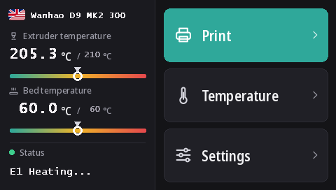

Flashing the Duplicator 9 touchscreen
Every D9, MK1 to MK3, has the same DWIN T5 touchscreen (480 × 272). With these firmwares it runs DGUS Reloaded 2.0, our new interface in 16 languages, flashed from a microSD card.
Download DWIN_SET.zip (DGUS Reloaded 2.0)
What DGUS Reloaded 2.0 brings
- 16 languages: English, Français, Deutsch, Español, Italiano, Português, Nederlands, Polski, Türkçe, Русский, العربية, हिन्दी, 中文, 日本語, 한국어, Bahasa Indonesia. Tap the flag next to the printer name on the home screen to switch; the printer remembers the choice.
- A filament sensor page: Settings → Filament → Filament sensor. See Filament sensor.
- A status line that stays: the last message, Ready for example, remains on screen instead of disappearing after 30 seconds.
- Temperature gauges for the nozzle and the bed, with the target marked.
- A new look for every page: dark theme, larger buttons, pictograms on the popups.

1. Format the microSD card
- Windows: Windows 11 often won't format FAT32; use GUIFormat and set the allocation unit size to 4096.
- Linux:
sudo mkfs.fat -F 32 -s 8 /dev/sdX1(check the device withlsblkfirst). - macOS:
sudo newfs_msdos -F 32 -c 8 /dev/diskN(check withdiskutil list).
2. Copy the files
Unzip DWIN_SET.zip and copy the whole DWIN_SET folder to the root of the card.
3. Flash
- Switch the printer off and unplug it.
- Open the front of the base to reach the back of the screen, where its microSD slot is.
- Insert the card and switch on. The screen shows the update within 10 to 30 seconds; wait until it restarts normally, 1 to 3 minutes in all.
- Switch off, remove the card, close the base.
Wanhao's video of a D9 screen update shows where the slot is.
Where it comes from
DGUS Reloaded 2.0 redraws DGUS Reloaded 1.0.3 (by Desuuuu, then Neo2003) page by page. Its source, the program that generates the screen files and the translations are on GitHub. A wrong or awkward word in your language? Tell us on Discord or open an issue there.
To go back to DGUS Reloaded 1.0.3, for example with a firmware older than v2.0.9, flash DWIN_SET_1.0.3.zip the same way.
Going back to Wanhao's screen
Wanhao's screen firmware only works with Wanhao's motherboard firmware. MK1: the screen file of the matching version on the MK1 page. MK1 + kit, MK2 and MK3: DWIN_SET_MK2.zip. Same procedure.